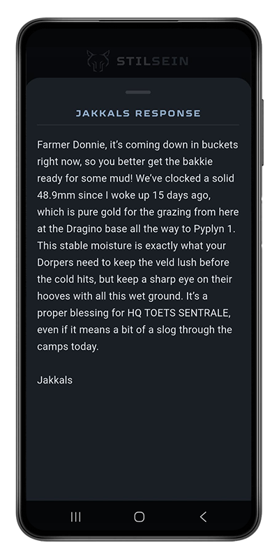
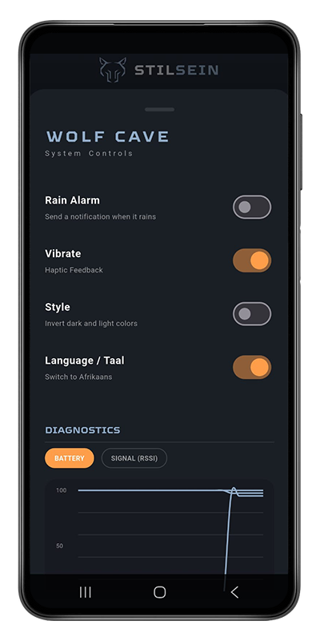
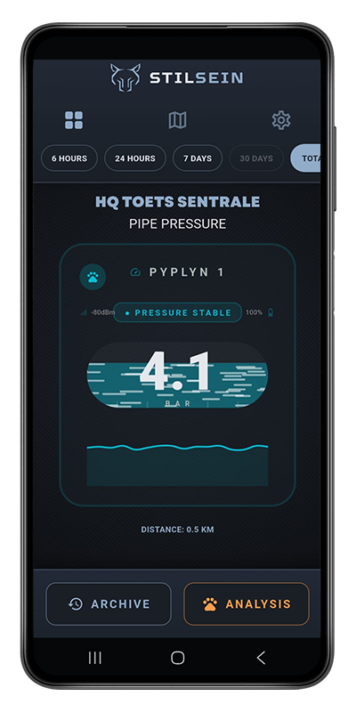
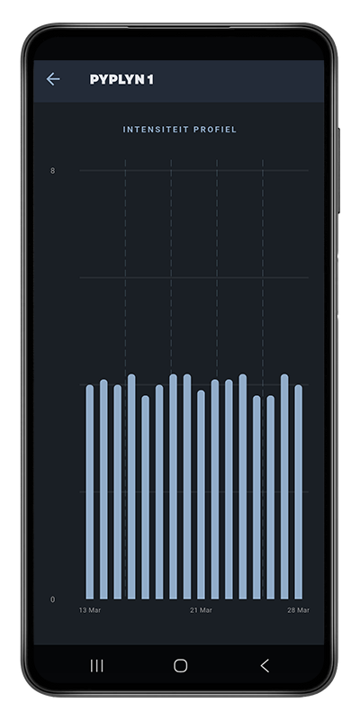
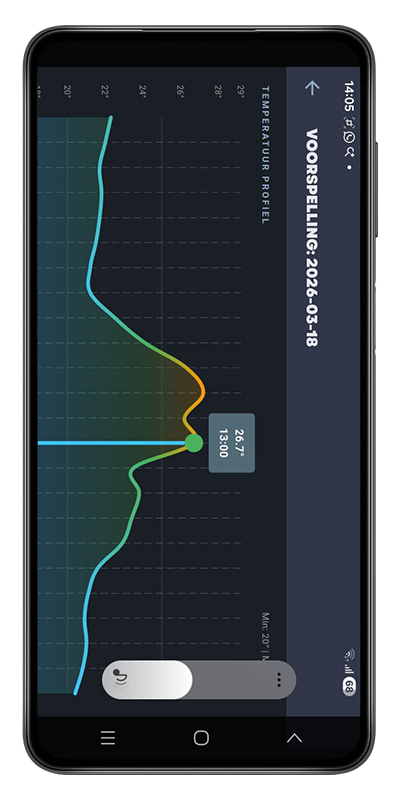
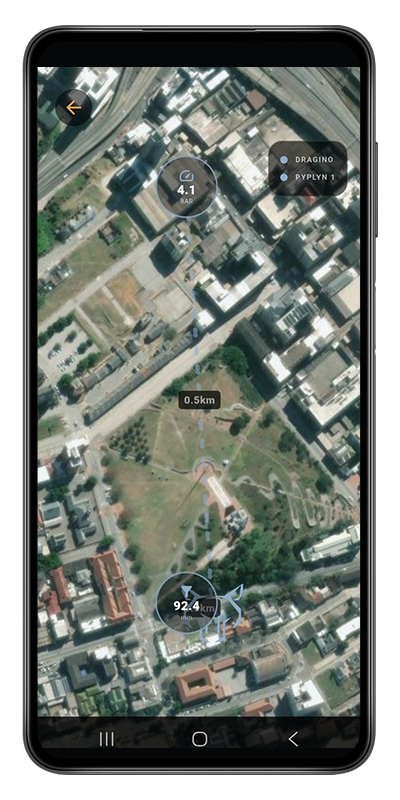

MONITOR JOU HELE PLAAS ONDER EEN DAK.
Raak aan enige skerm hieronder om diepte-analise te sien.












Om 'n stelsel op te stel vir net een reënmeter is nogal nice. Maar om 'n netwerk te bou wat pypdruk, plaashekke, damvlakke en uiterste weer gelyktydig dophou? Dit verander die game.
StilSein is modulêr. Belê in die hoofinfrastruktuur vandag, en voeg nuwe sensors by op jou eie tyd—of dit nou môre of oor twee jaar is. Jou app pas outomaties aan namate jou plaas groei.
"Monitor elke hoek en draai van jou plaas. Die wolf slaap wakker. Weet wanneer die eerste druppels val, of wanneer die pype loop en wanneer die boonste kamp se hek oop is. Stoor dan alles en hou 'n 10-jaar logboek van jou plaas se mikroklimaat om jou grondwaarde te verhoog."